El universo en expansión y las galaxias distantes
La expansión del universo estira la luz de las galaxias hacia el rojo. Ese estiramiento, el corrimiento al rojo (redshift, ), termina siendo una máquina del tiempo: mirar lejos es mirar al pasado. De ahí salen la técnica del Lyman break, la era JWST y galaxias confirmadas a , cuando el universo tenía menos de 300 millones de años.
El hilo conductor de la clase es una sola cantidad: el redshift . Empezamos por la observación que dio origen a todo (las galaxias lejanas se alejan más rápido), entendemos el corrimiento al rojo de dos maneras complementarias (efecto Doppler y expansión del espacio), y descubrimos que mayor redshift ⇒ mayor distancia ⇒ más en el pasado. Esa cadena convierte un fastidio observacional (la luz se nos escapa al infrarrojo) en la herramienta central de la cosmología observacional. Para alguien de informática, la clase es un recorrido por un pipeline de detección: una señal conocida (una línea, un quiebre espectral) reescalada por un factor , que detectamos primero con fotometría barata (imágenes en filtros) y confirmamos después con espectroscopía cara.
La expansión del universo
Las galaxias lejanas se alejan, y mientras más lejos, más rápido.
La pregunta de partida es honesta: ¿de verdad se expande el universo? La respuesta corta es sí, tan seguro como puede estarlo una teoría científica. La observación que lo sostiene la hicieron Georges Lemaître (1927) y Edwin Hubble (1929). Por décadas se la llamó "ley de Hubble"; en 2018 la Unión Astronómica Internacional (IAU) votó renombrarla ley de Hubble-Lemaître, porque Lemaître la había publicado antes, aunque en una revista de menor circulación.
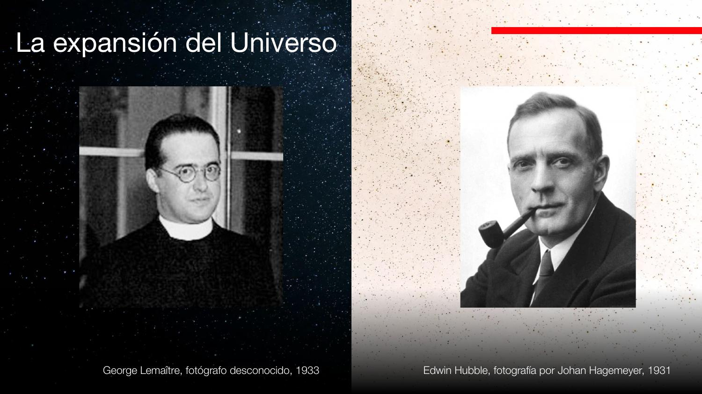
¿Qué se observa exactamente? El gráfico original de Hubble pone en el eje X la distancia a distintas galaxias y en el eje Y la velocidad radial con que se mueven respecto a nosotros (positiva = se aleja). La nube de puntos muestra una tendencia clara: mientras más lejos está una galaxia, más rápido se aleja. Es una relación estadística: algunas galaxias cercanas incluso se acercan (velocidad negativa) porque la gravedad local manda a pequeña escala.
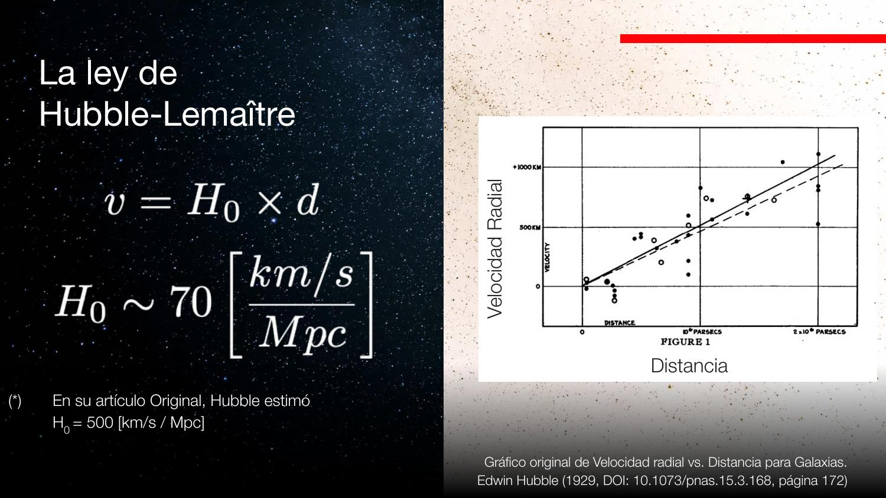
Dos matices importantes que aclaró el profesor:
- Gravedad vs. expansión. Que Andrómeda se acerque a la Vía Láctea no contradice la expansión: a escalas pequeñas (Grupo Local, cúmulos) la gravedad gana; la expansión solo domina a escalas suficientemente grandes (distancias entre cúmulos). La materia oscura cuenta como materia que atrae; la expansión es un fenómeno aparte.
- La expansión se acelera. No solo se expande: hoy lo hace más rápido que en el pasado. La causa hipotética se llama energía oscura — una especie de repulsión del espacio-tiempo. "Oscura" es, otra vez, el nombre que ponemos a lo que no entendemos.
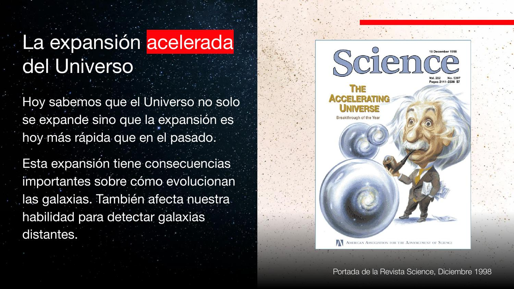
Hay dos formas independientes de medir y dan números levemente distintos (≈ 70 vs. ≈ 73). La diferencia es chica, pero las barras de error son tan pequeñas que no se solapan: por eso es significativa. O hay un error sistemático en alguna medición, o falta física por entender. Es la tensión de Hubble, una discusión abierta hoy.
Dos mediciones de con valores cercanos pero intervalos de confianza disjuntos son como dos pipelines que reportan una métrica con barras de error chicas que no se intersectan: estadísticamente, no estás midiendo lo mismo. La señal es real, no ruido, y obliga a auditar las suposiciones de cada medición.
Doppler y corrimiento al rojo
¿Cómo sabemos que se mueven? Por el color de su luz.
La velocidad de las galaxias la deducimos del efecto Doppler, el mismo fenómeno del sonido de un auto de Fórmula 1: cuando se acerca, las ondas se comprimen (más agudo); cuando se aleja, se estiran (más grave). Para la luz: una fuente que se aleja nos manda ondas de longitud de onda más larga, es decir, corridas hacia el rojo; una que se acerca, hacia el azul.
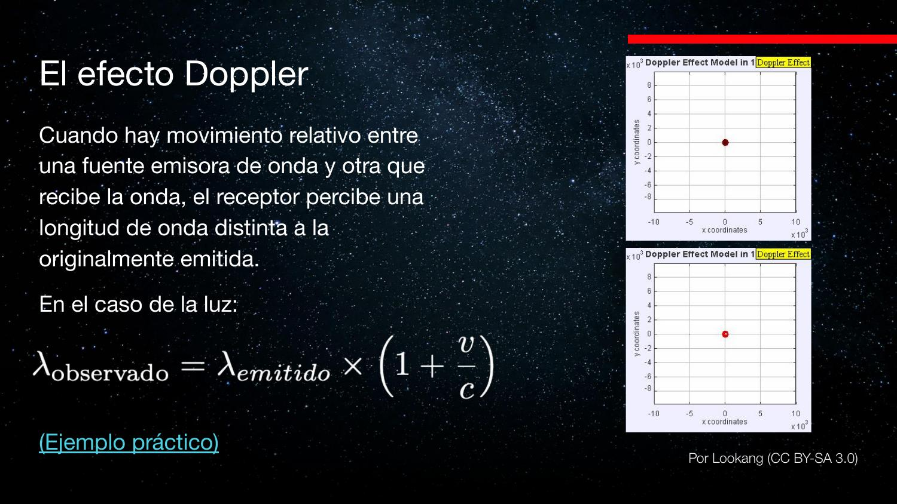
Cuanto más lejos está la galaxia, mayor su velocidad, mayor el factor y mayor el estiramiento. Un alumno preguntó si no es siempre despreciable (las velocidades parecen chicas frente a km/s). La respuesta: a distancias pequeñas sí (a 1 Mpc, km/s, nada frente a ), pero como la velocidad crece ≈ 70 km/s por Mpc, a miles de millones de Mpc se vuelve comparable a y el corrimiento se hace enorme.
Ojo: hay varias razones por las que una galaxia se ve roja (polvo, población estelar vieja). El enrojecimiento por redshift es distinto y se reconoce en el espectro: todas las líneas se corren por el mismo factor , manteniendo sus separaciones relativas. Eso es lo que permite medir sin ambigüedad.
El redshift como expansión del espacio
Las galaxias no se mueven: es el espacio entre ellas el que crece.
Hay una segunda forma de entender el redshift, más fiel a la cosmología. Imaginemos dos galaxias quietas en sus coordenadas, lo bastante lejos como para ignorar la gravedad. A medida que pasa el tiempo, el espacio entre ellas crece: la distancia aumenta aunque ninguna se haya movido de su coordenada. Cada galaxia se siente en reposo, pero ve a la otra alejarse. Ese movimiento relativo es, en cierto sentido, ficticio: no hay desplazamiento, hay más espacio en medio.
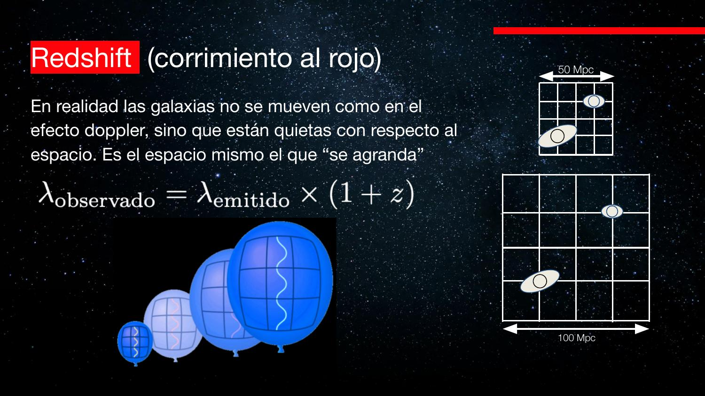
Esto explica una paradoja que inquieta a todos: la velocidad relativa entre dos galaxias puede superar la velocidad de la luz, y no se viola la relatividad. Ninguna galaxia se mueve por el espacio más rápido que la luz; lo que crece es la cantidad de espacio interpuesto. La consecuencia es dramática: hay galaxias cuya luz nunca nos llegará, porque el espacio entre nosotros crece más rápido de lo que su luz puede recorrerlo. Eso define una burbuja a nuestro alrededor: el universo observable, limitado por un horizonte.
El profesor pidió no obsesionarse con "cómo puede ser infinito y a la vez expandirse". La idea operacional es simple: lo que medimos es que las distancias promedio entre las cosas aumentan con el tiempo, y eso baja la densidad. Si el universo es finito o infinito es una pregunta más filosófica que práctica; la ciencia se queda con la fenomenología que permite predecir.
Doppler y "expansión del espacio" son dos modelos distintos que producen la misma fórmula en el régimen relevante: como dos implementaciones de la misma interfaz. El segundo modelo (estiramiento de coordenadas, el factor de escala ) es el "correcto" y explica casos límite que el primero no, igual que cuando una abstracción más general cubre los edge cases (recesión superlumínica) que la simplificada no maneja.
Redshift = máquina del tiempo
La cadena lógica que organiza toda la clase.
Aquí se juntan todas las piezas. La cadena es:
Pero la relación entre y el tiempo no es lineal. Una galaxia a no está al doble de tiempo (ni de distancia) que una a . Al principio, pasos chicos en cubren mucho tiempo; a redshift alto, hay que aumentar muchísimo para avanzar pocos millones de años. Para llegar al Big Bang hay que ir a .
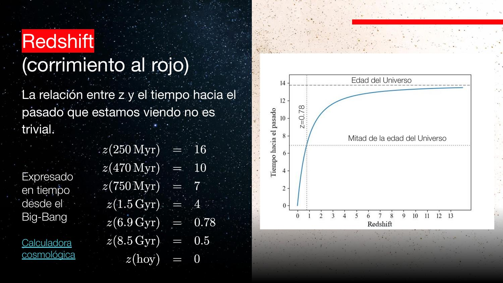
Edad del universo ≈ 13.800 millones de años. Algunos pares útiles: → universo de 1.500 Myr; → ≈ 900 Myr; → 750 Myr; → ≈ 470 Myr; → ≈ 284 Myr. El look-back time es el complemento respecto de 13.800 Myr. El CMB (radiación de fondo) se libera a : el redshift más alto observable.
El mapeo es una función no lineal y fuertemente comprimida en el extremo alto (parecida a una escala logarítmica saturada). Igual que en un eje log donde una década extra "cuesta lo mismo" visualmente pero representa 10×, aquí cada unidad de a alto "compra" cada vez menos tiempo. Hay que tener la tabla de conversión a mano (o una calculadora cosmológica) y nunca interpolar linealmente a ojo.
La luz se va al infrarrojo
La primera consecuencia práctica del redshift para observar.
Las estrellas de una galaxia (como el Sol) emiten la mayor parte de su luz en el óptico (≈ 4.000–7.000 Å, lo que ve el ojo). Pero si la galaxia está a redshift alto, toda esa luz se estira por . A , una línea de 500 nm (verde) se observa a 1.000 nm (1 µm), ya en el infrarrojo invisible al ojo. A hay que multiplicar por 5.
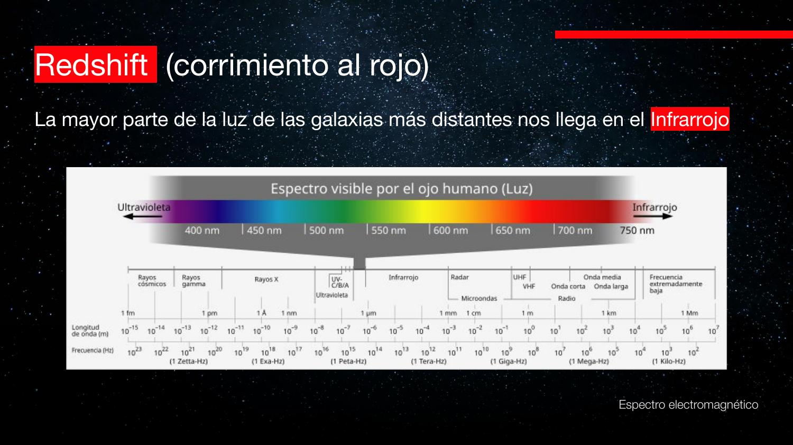
Podemos ver esto sobre el espectro de una galaxia (curva negra). La banda blanca marca la ventana óptica a la que tenemos acceso desde Tierra. A vemos el óptico de la galaxia. Al subir , el espectro se corre y se atenúa, y la ventana óptica empieza a mostrarnos partes distintas del espectro original: a , lo que cae en el óptico es el ultravioleta original (dominado por estrellas jóvenes, curva azul).
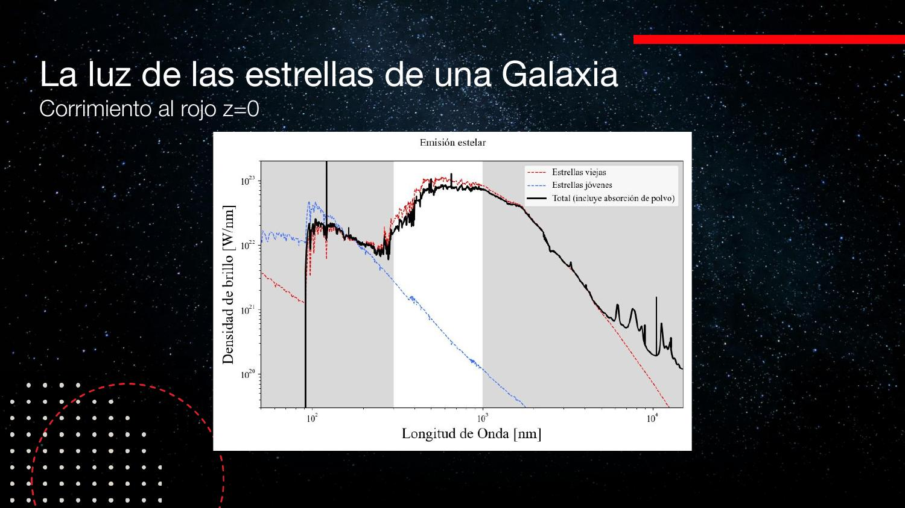
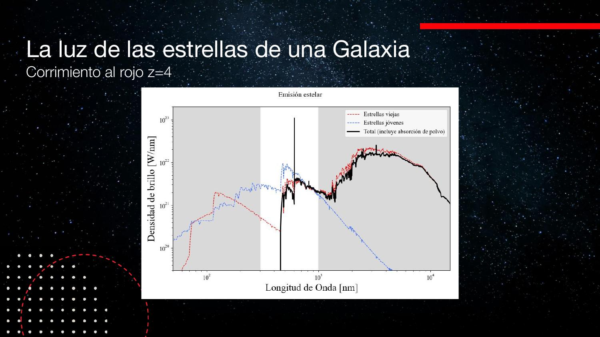
Al subir pasan dos cosas malas a la vez: (1) la galaxia se ve más débil (está más lejos), y (2) cambia qué parte del espectro observamos (de óptico a UV en reposo). Ambas dificultan el estudio y empujan a usar telescopios espaciales e infrarrojos.
Encontrar galaxias distantes: Lyman α y espectros
Una línea conocida, corrida al rojo, delata la distancia.
¿Cómo encontramos galaxias lejanas? Primera vía: líneas espectrales. En el UV en reposo de las galaxias jóvenes destaca una línea de emisión muy brillante: Lyman α, emitida por el hidrógeno a una longitud de onda en reposo de 1216 Å (121,6 nm).
De dónde sale Lyman α
Las estrellas masivas ionizan el gas de hidrógeno a su alrededor (le arrancan los electrones): queda una "sopa" de protones y electrones. Cuando un electrón se recombina con un protón, no suele caer directo al nivel fundamental, sino que va decayendo nivel a nivel. La transición del nivel 2 al nivel 1 emite el fotón de Lyman α, y es de las más probables — por eso la línea es tan prominente.
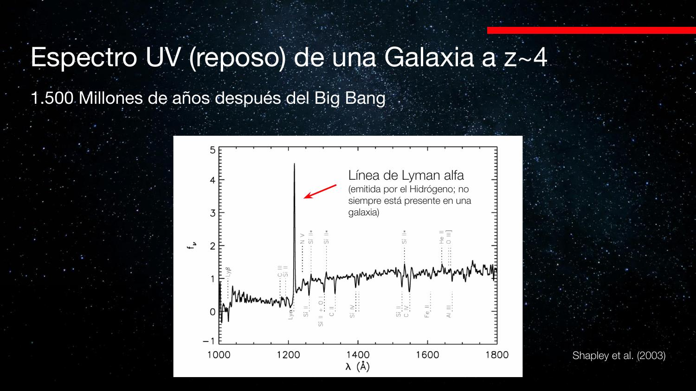
Si conocemos la longitud de onda en reposo (1216 Å) y la medimos corrida, despejamos . Ejemplo de la clase: una galaxia muestra la línea a ≈ 8400 Å. Entonces → . Esa galaxia emitió su luz cuando el universo tenía ≈ 900 Myr, y esa luz viajó ≈ 12.800 Myr hasta nosotros.
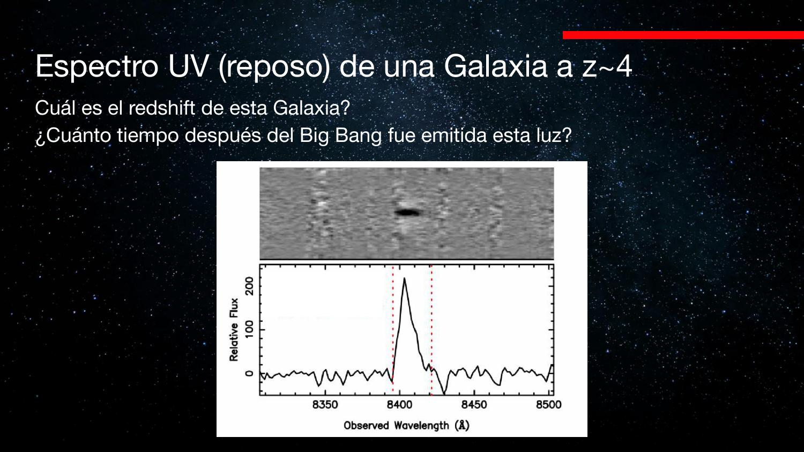
Para medir líneas hay que tomar un espectro: aislar la luz del objeto (con una ranura), dispersarla (con un prisma o red) y registrarla. Eso (1) obliga a observar pocos objetos a la vez (hay que aislar cada uno) y (2) diluye la luz: la repartes en muchas longitudes de onda, así que en cada píxel llega poca señal y es más difícil detectar. Conclusión: espectroscopía = cara; imagen = barata.
Medir a partir de líneas es cross-correlation / template matching: tienes un patrón conocido (las longitudes de onda en reposo de un set de líneas) y buscas el factor que lo alinea con lo observado. Más líneas = más restricciones = ajuste sobredeterminado y robusto. Pero adquirir ese dato (el espectro) tiene alto costo de "I/O": dispersar la señal baja la relación señal/ruido por canal.
La técnica del Lyman break
Detectar galaxias lejanas con imágenes, sin tomar espectro.
La técnica más popular aprovecha un rasgo que siempre está presente (a diferencia de la línea Lyman α): el quiebre de Lyman (Lyman break). El espectro tiene flujo casi nulo a longitudes de onda cortas (por debajo de 912 Å en reposo, el límite de Lyman) y de pronto "se enciende" a longitudes mayores. Ese escalón se debe a la absorción por hidrógeno a lo largo del universo.
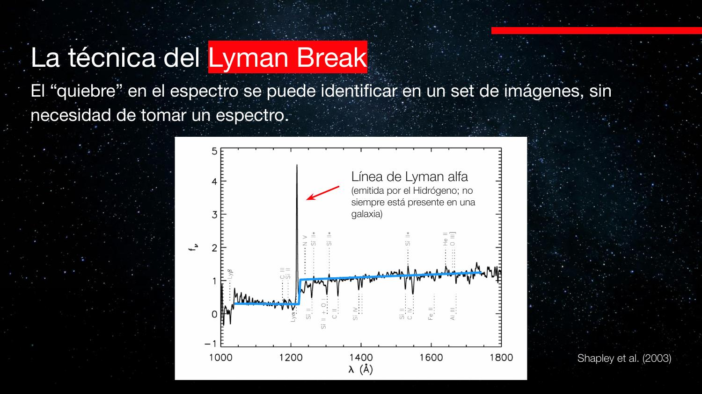
La idea: una imagen astronómica en color se arma tomando fotos con distintos filtros (cada uno deja pasar un rango de longitudes de onda) y asignándoles RGB. Para una galaxia de alto redshift esperamos que en los filtros azules (longitudes cortas) no aparezca nada y que de pronto, en un filtro más rojo, surja un objeto brillante. El filtro donde "desaparece" se llama, por eso, el filtro de dropout.
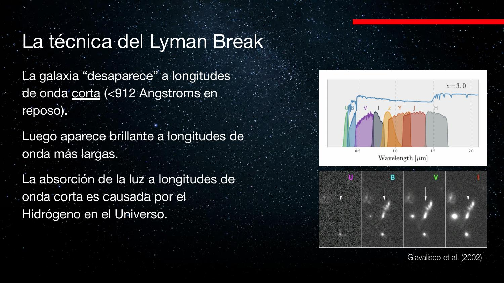
La gran ventaja: una sola imagen contiene millones de objetos. Aplicando el criterio de dropout identificamos miles de candidatas de alto redshift de golpe, sin tomar un espectro por cada una. La técnica funciona a distintos redshifts: a mayor , el dropout ocurre en un filtro más rojo.
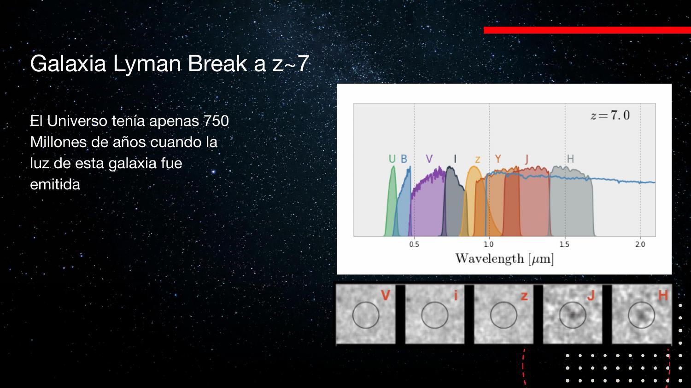
El Lyman break selecciona candidatas; no las confirma. Para estar seguros del redshift se toma después un espectro de seguimiento que mida líneas. Pero muchos estudios estadísticos con poblaciones grandes usan solo el Lyman break (sin confirmación espectroscópica), porque tomar tantos espectros es prohibitivamente caro.
[CII] a 158 µm con ALMA
Otra línea, mucho más al rojo, y otro telescopio chileno.
El profesor contó una vía alternativa en la que está involucrado. El gas de las galaxias produce otras líneas de emisión; una de las más brillantes es la de [CII] a 158 µm en reposo (¡mucho más larga que los 1216 Å de Lyman α!). El observatorio ALMA (en Chile) puede tomar espectros de esa línea en galaxias a .
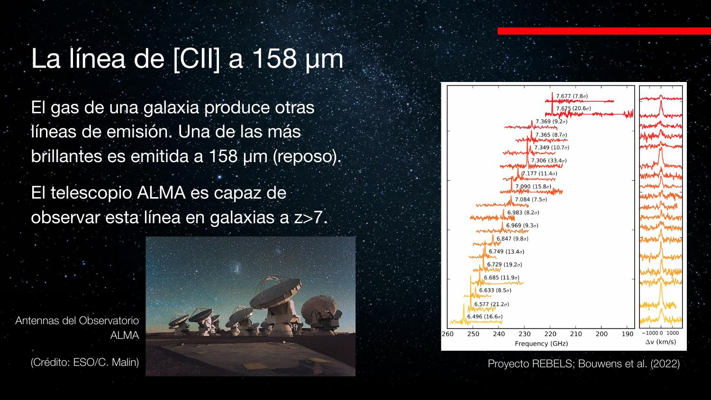
Combinar ≈ 50 antenas para "rescatar" la señal débil de una galaxia es stacking / coherencia de señales: sumar muchas mediciones del mismo objeto aumenta el área colectora efectiva y la relación señal/ruido. Es el mismo principio de promediar muchas trazas ruidosas para hacer emerger una señal sepultada en el ruido.
La función de luminosidad UV y su evolución
Contar galaxias por brillo, a distintas épocas, y verlas crecer.
Con la técnica del Lyman break (vía Hubble, HST) se midió la función de luminosidad de las galaxias a distintos redshifts: cuántas galaxias hay por unidad de volumen comóvil en cada brillo. Como a alto solo accedemos al UV en reposo, es una función de luminosidad UV.
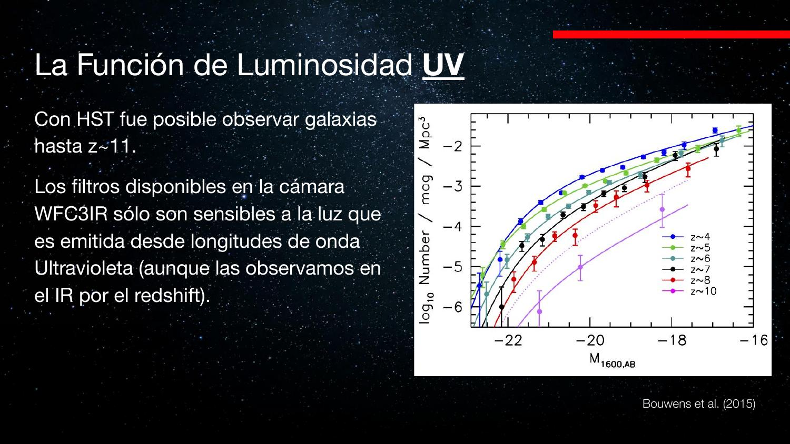
Dos tendencias clave (las mismas de la Clase 1, ahora en el universo muy joven):
- La normalización sube con el tiempo: cada vez hay más galaxias en total. El universo tenía muchísimas menos a los 400 Myr () que a los 1.500 Myr ().
- La pendiente (α) cambia: al principio dominan abrumadoramente las galaxias chiquititas (débiles); con el tiempo crecen las grandes (brillantes), por fusiones y acreción de material. La población se va poblando en el extremo brillante.
La historia que arma esto: primero nacen muchas galaxias pequeñas; luego, colisionando y acretando gas, forman objetos cada vez más grandes. La función de luminosidad evoluciona "de izquierda a derecha" (de débiles a brillantes) hasta el presente. Es la formación jerárquica de estructuras.
La historia de formación estelar del universo
Uno de los gráficos más famosos de la astronomía.
El brillo UV de una galaxia traza sus estrellas masivas, que viven poco. Mucho UV ⇒ formación estelar reciente. Existe una correlación entre brillo UV y tasa de formación estelar (SFR). Sumando sobre todas las galaxias y dividiendo por volumen comóvil, se obtiene la densidad de formación estelar del universo en cada época.
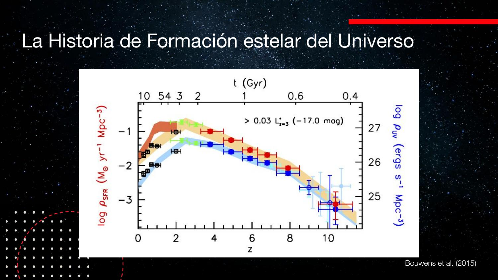
La lectura: el universo joven formaba estrellas a un ritmo creciente, llegó a un máximo y "se cansó"; desde entonces el ritmo decae y seguirá decayendo hasta que nazca la última estrella. ¿Por qué? Dos explicaciones (no excluyentes):
- Combustible: al principio había gas en abundancia; al formar estrellas, el gas se agota, y sin material no se pueden formar más estrellas.
- Feedback de AGN: el número de núcleos activos también tiene un pico parecido. Los AGN pueden "matar" la formación estelar de su galaxia (la vuelven roja), contribuyendo a la caída.
La curva SFR(z) es una serie temporal con un único máximo (rise-and-decay), como la tasa de crecimiento de un sistema que primero acelera al haber recursos abundantes y luego se satura/decae al agotarse el "presupuesto" (el gas). El "look-back" en el eje superior es un cambio de variable no lineal: cuidado al leer pendientes, porque el eje comprime el tiempo de forma desigual.
La era JWST y las galaxias más distantes
Más área colectora, más infrarrojo, espectros al por mayor.
Todo lo anterior se hizo con el Hubble (HST). El Telescopio Espacial James Webb (JWST) cambió el juego con dos optimizaciones:
- Más grande: espejo de ≈ 6,5 m de diámetro efectivo vs. los ≈ 2,4 m de Hubble. Más área colectora ⇒ ve objetos más débiles ⇒ alcanza galaxias más distantes.
- Optimizado para el infrarrojo: está bañado en oro (refleja mejor las longitudes largas) y tiene filtros a longitudes de onda mucho mayores que el último filtro de Hubble (≈ 1,6 µm). Eso permite aplicar el Lyman break a redshifts mucho más altos.
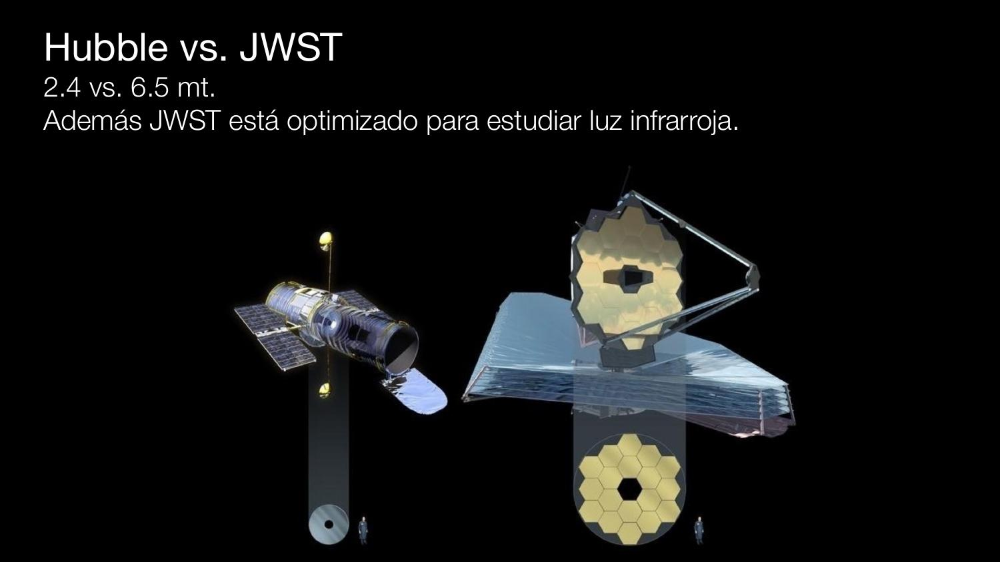
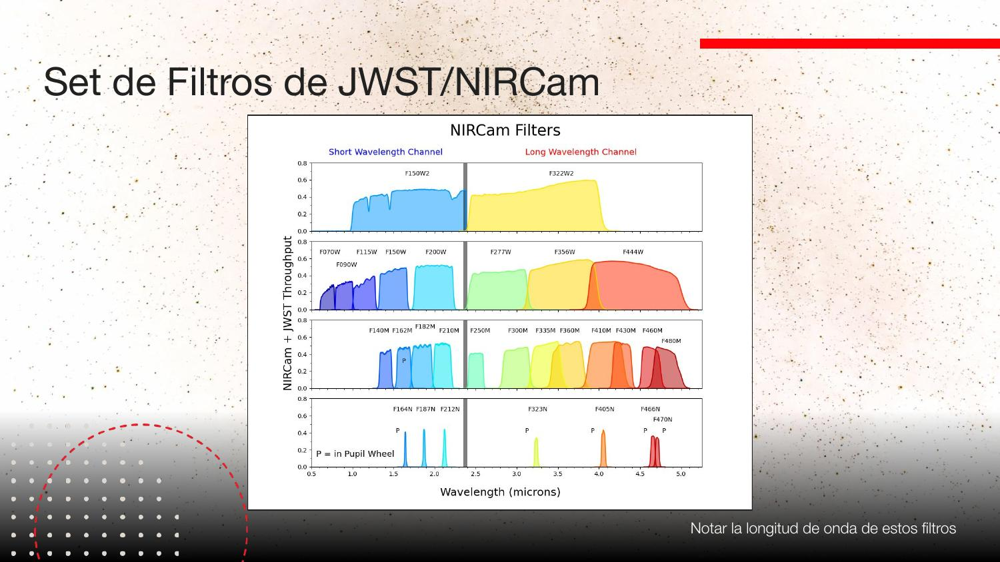
JWST también toma espectros infrarrojos con NIRSpec. Como no se pueden "mandar al espacio placas metálicas con ranuras", usa una rejilla de microobturadores programables: desde Tierra se abren o cierran ranuras individuales para dejar pasar la luz de cada objeto. Así se toman hasta ≈ 100 espectros simultáneos.
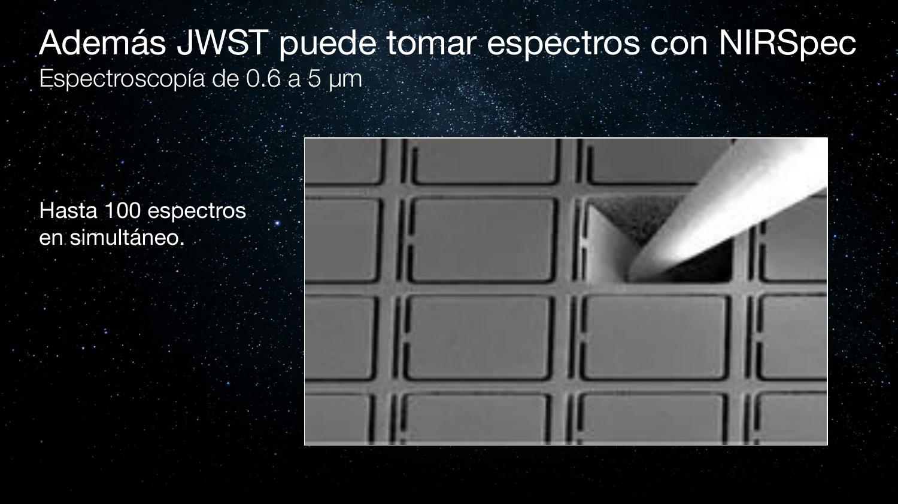
Confirmaciones espectroscópicas a alto z
Una de las primeras imágenes liberadas (cúmulo SMACS 0723) traía el espectro de una galaxia a (≈ 600 Myr tras el Big Bang) con líneas de oxígeno, neón e hidrógeno. Sorpresa: a esa época ya había elementos químicos pesados. Lo que vemos no son las primeras estrellas, sino al menos una segunda o tercera generación: hubo supernovas previas que enriquecieron el medio. El enriquecimiento químico ocurre muy rápido.
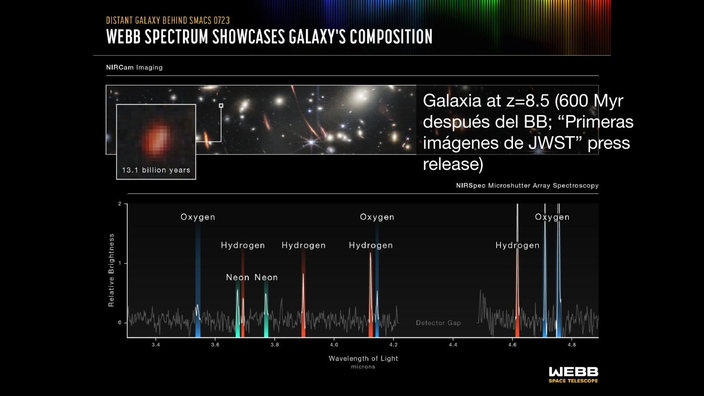
El récord de la galaxia más distante
El profesor tuvo que actualizar esta diapositiva varias veces. Durante un tiempo, el récord fue JADES-GS-z14-0 a (≈ 286 Myr tras el Big Bang). Detectada como Lyman break (aparece recién a ≈ 2 µm, fuera del alcance de Hubble) y confirmada con espectro: continuo, quiebre y líneas débiles.
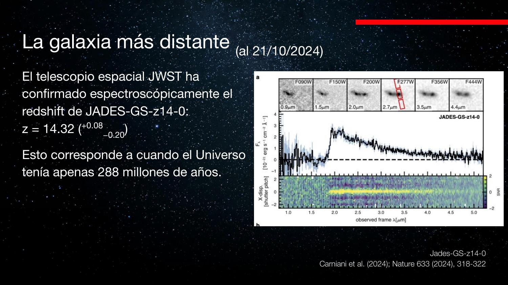
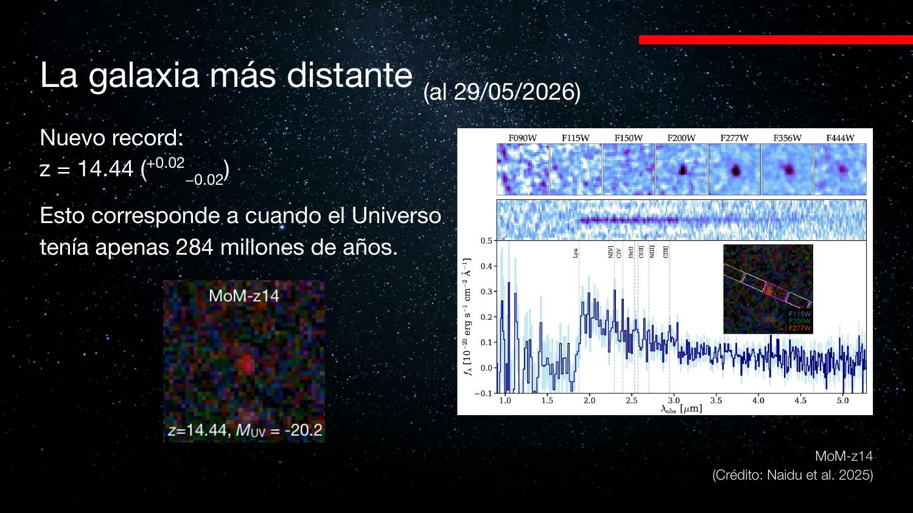
¿Demasiadas galaxias demasiado pronto?
Extendiendo la función de luminosidad UV a aparece algo inesperado: si tomamos la evolución medida a y la extrapolamos a , predecimos muchas menos galaxias de las que se observan. La medición está lejos de la extrapolación, más que las barras de error: hay más galaxias brillantes de lo esperado.
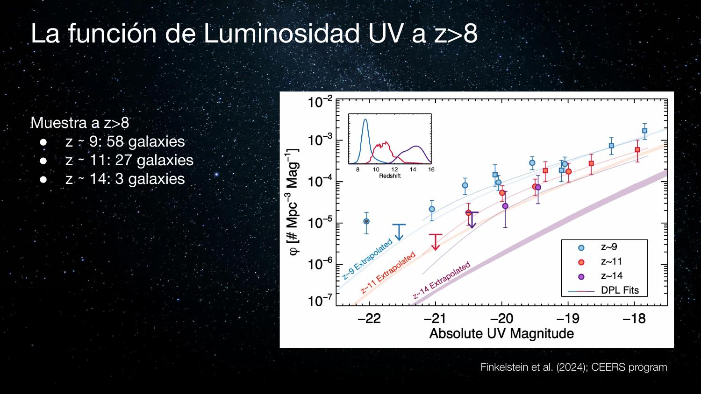
8 (Finkelstein 2024): z~9 (58 galaxias), z~11 (27), z~14 (3), con curvas extrapoladas por debajo de los datos">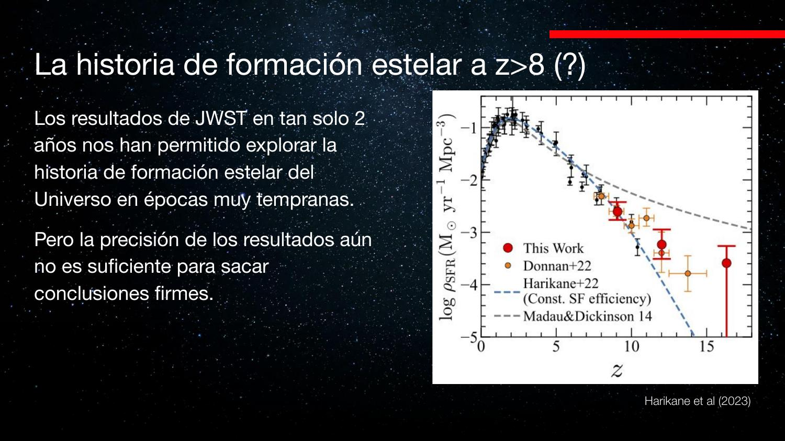
8 (Harikane 2023): los puntos a z=14-16 quedan por encima de la curva suave esperada">"Esto ya es la frontera última de lo que sabemos." Todavía está en discusión si el salto es real; debe reproducirse independientemente. Si se confirma, habrá que revisar las teorías de formación de galaxias: se están formando más rápido de lo esperado. El límite duro hoy es el área colectora: se planean telescopios espaciales de 16 m. El ELT (40 m) se construye en Chile, pero al estar en tierra, la atmósfera limita lo que puede ver de tan lejos.
Todo nace de una cantidad: el redshift. La expansión estira la luz (Doppler o globo, da igual el modelo); mayor = mayor distancia = más en el pasado. El Lyman break nos deja seleccionar galaxias lejanas con imágenes baratas; la espectroscopía (ALMA, NIRSpec) las confirma. Con eso reconstruimos la función de luminosidad y la historia de formación estelar del universo, hoy trazada desde hasta . Y esto recién empieza: JWST tiene por delante 10–15 años. El objetivo final no es el récord de distancia, sino reunir decenas de galaxias muy lejanas para una estadística robusta — incluso una galaxia primordial, solo de hidrógeno y helio.
Conceptos clave
Tabla de repaso rápido.
| Concepto | Qué es / valor | Por qué importa |
|---|---|---|
| Ley de Hubble-Lemaître | , km/s/Mpc | Más lejos = más rápido se aleja; evidencia de la expansión |
| Renombre IAU 2018 | De "ley de Hubble" a "Hubble-Lemaître" | Lemaître la publicó antes (1927) |
| Energía oscura | Causa (desconocida) de la expansión acelerada | La expansión es hoy más rápida que en el pasado |
| Tensión de Hubble | Dos medidas de (~70 vs ~73) no se solapan | Posible física nueva o sistemático sin resolver |
| Efecto Doppler (luz) | Se aleja → al rojo; se acerca → al azul | |
| Redshift z | Mide distancia/época; cadena z→v→d→pasado | |
| Expansión del espacio | Las galaxias quietas; crece el espacio | Permite recesión > c sin violar relatividad |
| Universo observable | Burbuja con horizonte a nuestro alrededor | Hay galaxias cuya luz nunca nos llegará |
| Relación z–tiempo | No lineal; z=0,78 = mitad de la edad | A alto z, mucho z = poco tiempo |
| Edad del universo | ≈ 13.800 Myr | z=4→1.500 Myr; z=7→750 Myr; z=14,4→≈284 Myr |
| Lyman α | Línea del H a 1216 Å (transición 2→1) | Brillante; permite medir z (no siempre presente) |
| Quiebre / break de Lyman | Caída del flujo bajo 912 Å en reposo | Siempre presente; base de la técnica fotométrica |
| Técnica del Lyman break | "Dropout": invisible en filtros azules | Selecciona miles de galaxias lejanas con imágenes |
| Espectro vs. imagen | Espectro = caro (diluye luz, 1 objeto) | Por eso se selecciona con imagen y se confirma con espectro |
| [CII] a 158 µm | Línea del gas observable con ALMA | Confirmó galaxias a z≈7–9 antes de JWST |
| FL UV evolutiva | Sube normalización y cambia α con el tiempo | Formación jerárquica: de muchas chicas a grandes |
| Historia de SFR | Pico a , luego decae | Gas que se agota + feedback de AGN |
| JWST | ≈ 6,5 m, IR, bañado en oro, NIRSpec | Diseñado para galaxias distantes; z>14 |
| Microobturadores | Rejilla programable de ranuras (NIRSpec) | Hasta ≈ 100 espectros simultáneos |
| JADES-GS-z14-0 / MoM-z14 | z=14,32 / z=14,44 (≈ 286 / 284 Myr) | Récords de galaxia más distante |
| "Demasiado pronto" | Más galaxias a z~14 que la extrapolación | Posible revisión de teorías de formación |
| z del CMB | Redshift más alto observable |
Exámenes de práctica
10 exámenes de 5 preguntas (3 de alternativas autocorregibles + 2 de respuesta escrita).